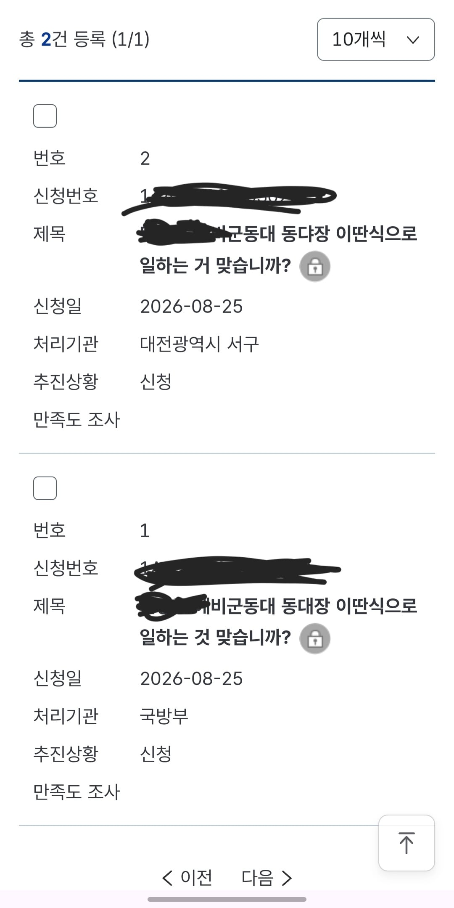
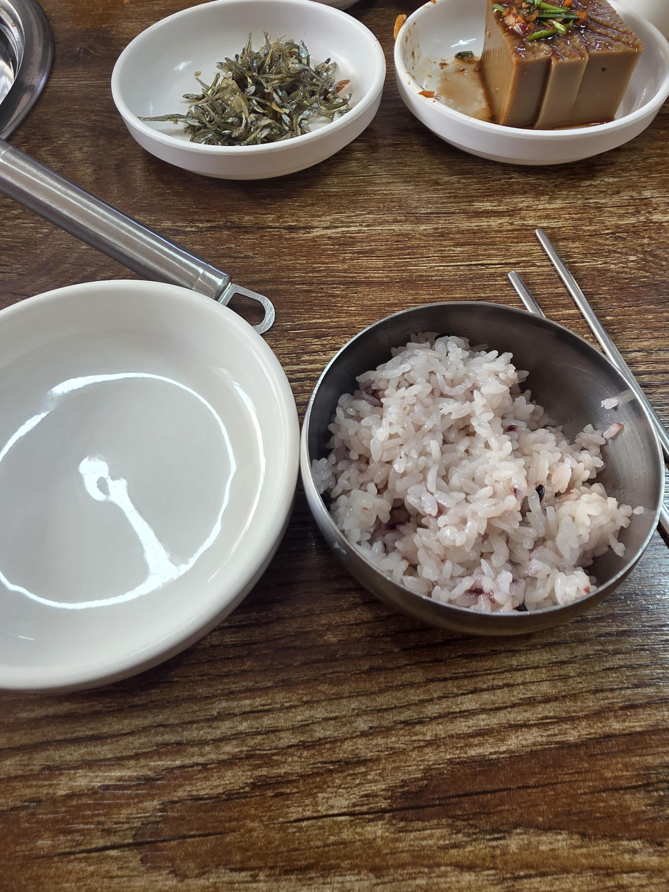

https://www.dogdrip.net/721099206
이전 글

민원, 제보 각각 2건씩 총 4개
이전글에서 내가 동대장 이새끼랑 놀아보자고
개빡치는데 불난집 기름부어버린 계기는

이딴 곳 강제로 쳐먹게해서 애들 봐주는게 도탄났다는 거임
그럼 내가 제일 빡쳤던 부분은 무엇이냐
동대장새끼 언행과 태도문제였음
애들 봐주러 잠깐 집가려고 했는데 갑자기 왜 강제로 먹어야 되냐
지금까진 선택사항이지 않았냐는 질문에 동대장은
"그러니까 점심을 여기서 주는데 -굳이-집까지 갔다오시겠다고요?"
"나는 예비군이 훈련 나와서 그런다는건 이해가 안돼요"
"아니 어떤 예비군이 그런답니까?"
"지금까지 그래왔다고요? 그건 예비군이 당신에게 호의를 베푼것이지 그걸 권리라고 생각하면 크게 잘못된 거 아닙니까?"
"집에 애 봐줄 사람도 없답니까?"
이딴식의 언행을 약 70-80명 가량의 인원 앞에서 지껄임
일정들이 다 캔슬되었다고 연락이 오자 그제서야 맘에 안든다는 표정으로 "그냥 집에 가보세요"
??? : 야 니가 집이 차로 20분 걸리는 거리였던거 아님?
난 집이 시발 걸어서 8분 이었음
시작부터 반말 찍찍싸면서 상근, 하사 애들한테 예비군 앞에서 "일 그따우로밖에 못해?"하고 꼽 존나주길래 이상한 새끼다 싶었는데
넌 내가 어떻게든 크게 만들어서 조진다
댓글
수집 당시 댓글 1개
개월째가입후회중 · 9 분 전
꼭!!!!꼭!!! 후일담 적어줘! 그리고 고발당하면 메로나